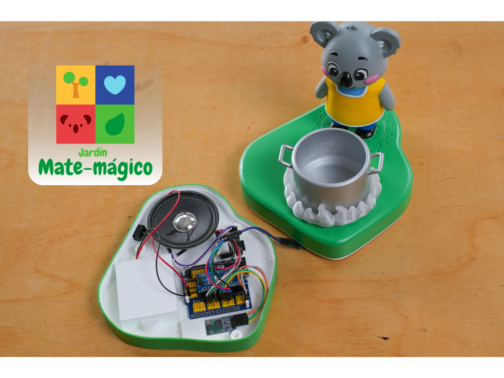
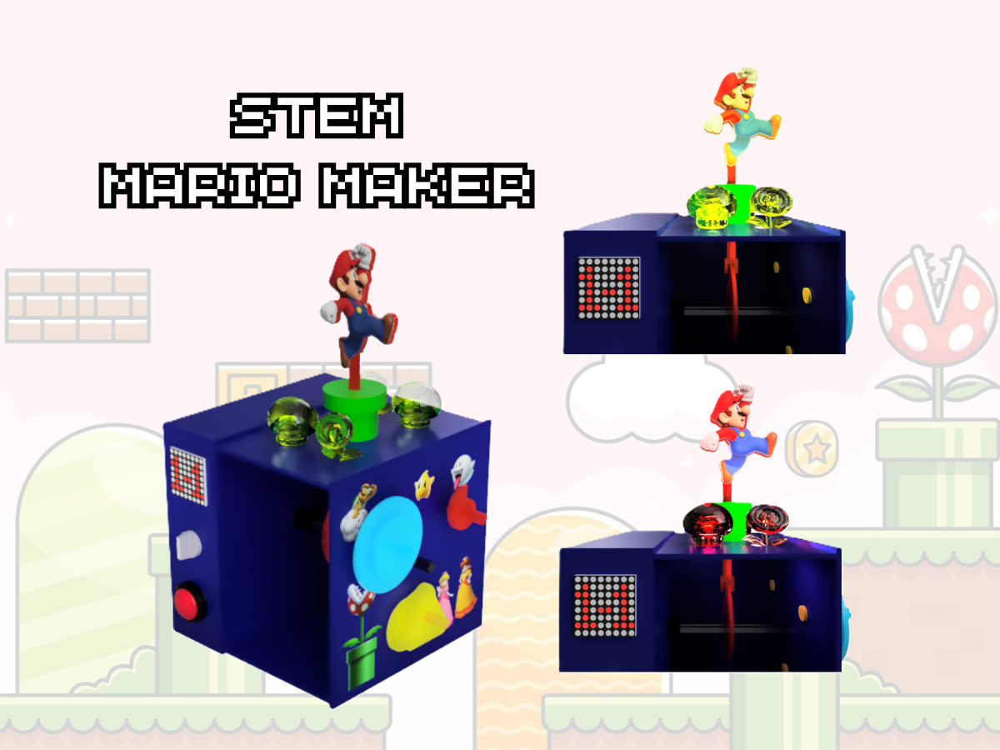

Engineering meets Design
Hardware & Prototyping
Exploring the intersection of physical objects and digital logic through interactive electronics and creative coding.

Arduino • Bluetooth • LEDs
Jardín Matemágico: Tech Stack
Building a multisensory educational toy using Arduino Nano and interactive electronics.

Physical Computing • Gamification
STEM Mario Maker
Interactive game controller prototype designed to teach electronics through gamification.